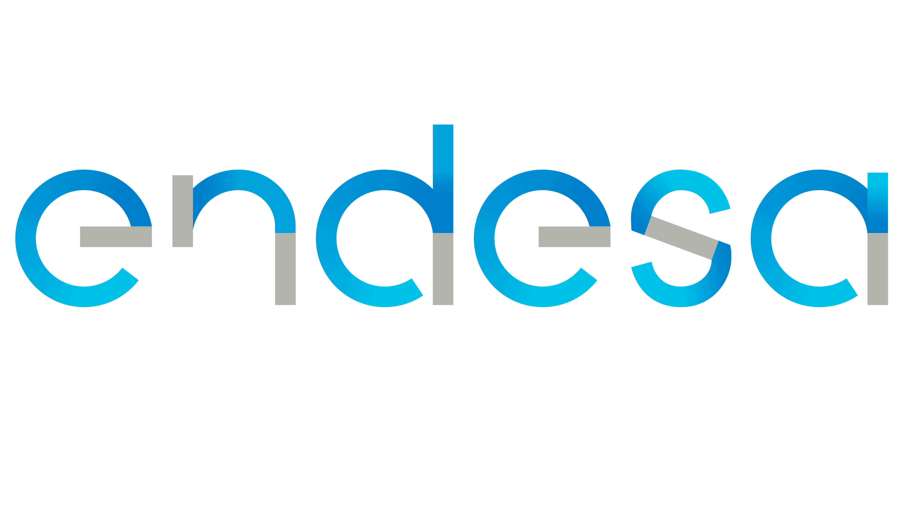

Developed new offer solutions with the innovation's Software Department using C++, Python and Django (managing templates, database and administration).
Deployed solutions on remote machines.
Designed and implemented database models.
Refactored code to make it cleaner, scalable and esier to maintain.

Technical Management Internship
Málaga [Oct 2021 - Oct 2022]
I managed and certified the periodic revisions of the aerial medium voltage networks.